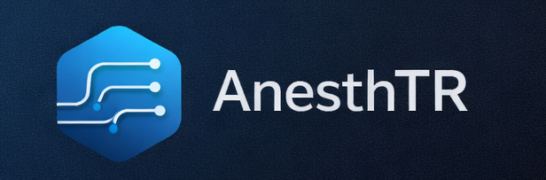

AnesthTR
Evaluaciones de Anestesiología · DFC Medical Apps
TURNO VESPERTINO
Trivia general
General
● Activo
Trivia de Anestesiología
Preguntas de repaso general para todos los grados. Farmacología, fisiología y conceptos clave.
🎯 Trivia interactiva
📊 Con puntaje
→
Exámenes mensuales por grado
R1
● Activo
Exámenes R1 — Marzo 2026
Vía aérea, evaluación preanestésica, clasificaciones ASA/Caprini y anestésicos locales.
📝 2 exámenes
📊 Con calificación
→
R2
● Activo
Exámenes R2 — Marzo 2026
Anestesia regional, tipos de bloqueo, anatomía y técnicas guiadas por ultrasonido.
📝 1 examen
🫀 Anestesia Regional
→
R3
Próximamente
Exámenes R3 — Marzo 2026
Temas por definir.
📝 Próximamente
Módulos interactivos
EcoEstudio
● Activo
EcoEstudio — Ultrasonido en Anestesia Regional
Identifica estructuras anatómicas en la ventana ecográfica de bloqueos nerviosos periféricos.
🔊 2 bloqueos disponibles
🎯 Juego interactivo
→